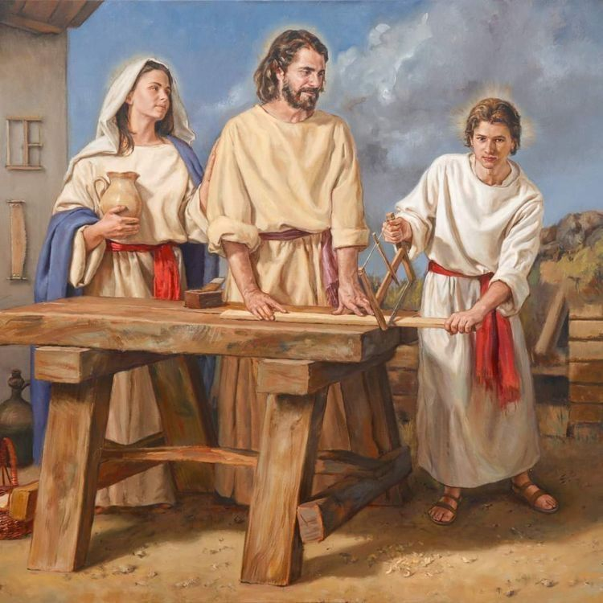
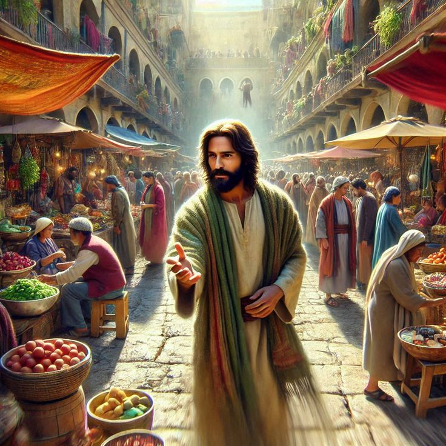

The Growing Jesus
The boy who lived humbly in Nazareth grew to become the Savior of the world. His life teaches us this timeless truth: “Grow in obedience, live in love, and glorify God in everything you do.”
Jesus returned to Nazareth
A Peaceful Life in Nazareth
நாசரேத்தில் அமைதியான வாழ்க்கை
After speaking with the teachers in the Temple, Jesus returned to Nazareth with His mother Mary and father Joseph. There, He lived a simple and humble life. He learned the carpenter’s trade from Joseph and grew close to God through daily prayer and hard work. In the quiet town of Nazareth, Jesus lived in peace, faith, and obedience — a perfect example of godly living.
ஆலயத்தில் பண்டிதர்களோடு பேசியபின், இயேசு தனது தாயார் மரியாளும் தந்தை யோசேப்பும் உடன் நாசரேத்திற்குத் திரும்பினார். அங்கே அவர் மிகவும் எளிமையாகவும் கீழ்ப்படிந்தும் வாழ்ந்தார். அவர் தந்தையுடன் சேர்ந்து தச்சுக்காரர் தொழிலை கற்றார். அன்றாட வாழ்க்கையில், கடின உழைப்பிலும், பிரார்த்தனையிலும் அவர் தேவனுக்குப் பக்கமாக வளர்ந்தார்.

The Obedient Son
பெற்றோருக்குக் கீழ்ப்படிந்த இயேசு
Jesus always honored His parents. He listened to His mother’s words, helped His father with his work, and spoke kindly and gently to everyone. His behavior became an example for other children. Everyone who saw Him said: “This child is truly filled with God’s grace!”
இயேசு எப்போதும் தனது பெற்றோரைக் கௌரவித்தார். அவர் தாயின் சொற்களை கவனித்தார், தந்தையின் பணிகளில் உதவினார், எப்போதும் அமைதியாகவும் அன்பாகவும் நடந்துகொண்டார். அவரது நடத்தை மற்ற குழந்தைகளுக்கு மாதிரியாக இருந்தது. அவரை பார்த்து அனைவரும் சொன்னார்கள்: “இந்தச் சிறுவன் தேவனின் அருளில் இருக்கிறான்!”
Growing in Wisdom and Compassion
ஞானத்திலும் கருணையிலும் வளர்ந்தவர்
As Jesus grew in age and strength, He also grew in wisdom and understanding. He deeply studied the Word of God, and found favor with both God and people. Even when playing with friends, He spoke words of kindness and encouragement. His heart was always pure, gentle, and full of mercy.
அவர் வயதிலும் உடலிலும் வளர்ந்ததோடு, ஞானத்திலும் மிகுந்தார். அவர் தேவனுடைய வார்த்தைகளை ஆழமாகப் புரிந்து, அவர் நண்பர்களோடு விளையாடியபோதும், அவர்களுக்கு நன்மையைச் சொல்லும் வார்த்தைகளைப் பகிர்ந்தார். அவரது மனம் எப்போதும் சுத்தமாகவும் கருணையுடனும் இருந்தது.
A Child Filled with God’s Graceg Jesus in the Temple
தேவனுடைய அருளில் வளர்ந்த சிறுவன்
The people of Nazareth knew Jesus as a loving and humble young boy. There was always a calm peace and light on His face. Those who saw Him could feel it in their hearts — “This is no ordinary child; the Spirit of God lives within Him.” His goodness, love, and prayerful life caused Him to grow in God’s divine favor.
நாசரேத்தின் மக்கள் அனைவரும் இயேசுவை ஒரு அன்பான, பணிவான சிறுவனாக அறிந்தனர். அவரது முகத்தில் எப்போதும் அமைதியும் சாந்தியும் இருந்தது. அவரை பார்த்தவர்கள் மனதில் உணர்ந்தார்கள் — “இவர் சாதாரண சிறுவன் அல்ல; இவருள் தேவனின் ஆவி இருக்கிறது.” அவரது நல்லொழுக்கம், அன்பு, பிரார்த்தனை வாழ்க்கை அவரை தேவனின் கிருபையில் வளரச்செய்தது.

The Divine Journey of Growth
இயேசுவின் வளர்ச்சி – ஒரு தெய்வீக பயணம்
As Jesus matured, God’s purpose began to shine more clearly in His life. He was preparing to become the Teacher and Savior of the world. From childhood onward, Jesus lived in complete obedience to God’s will.
இயேசு வயதிலும் ஞானத்திலும் வளர்ந்தபோது, அவருள் தேவனுடைய நோக்கம் தெளிவாக வெளிப்பட்டது. அவர் விரைவில் உலகத்திற்கு இரட்சகராகவும் ஆசிரியராகவும் வரப்போகிறார். அவரது குழந்தை நிலை முதல் அவரது வாழ்க்கை முழுவதும், தேவனுடைய சித்தத்துக்குக் கீழ்ப்படிதல் என்பதே அவரது வழி.
From His earliest days, Jesus showed us that true greatness begins in humility. He didn’t grow up in a palace, but in a small home filled with love and faith. He didn’t seek fame or wealth — He sought to do the will of His Heavenly Father. As He grew in wisdom and grace, His heart reflected perfect love — a love that would one day be shown on the Cross for all mankind.